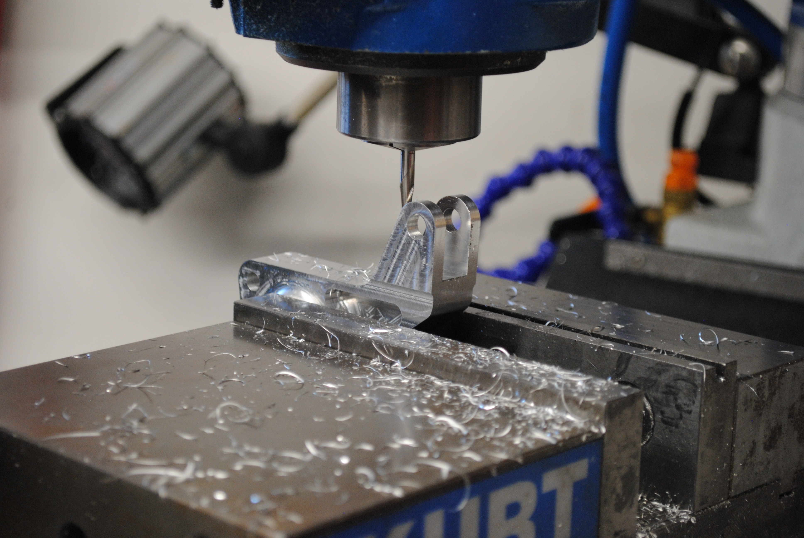
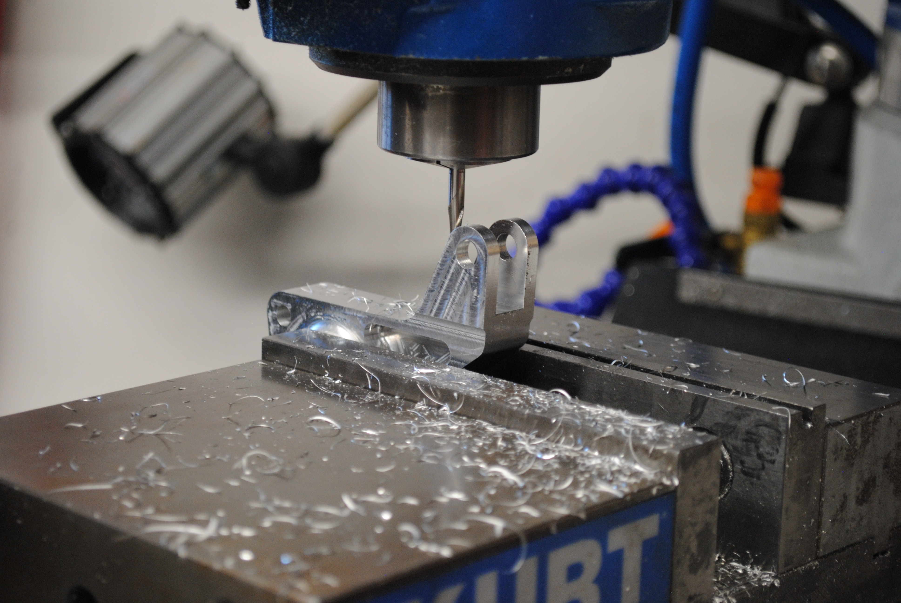
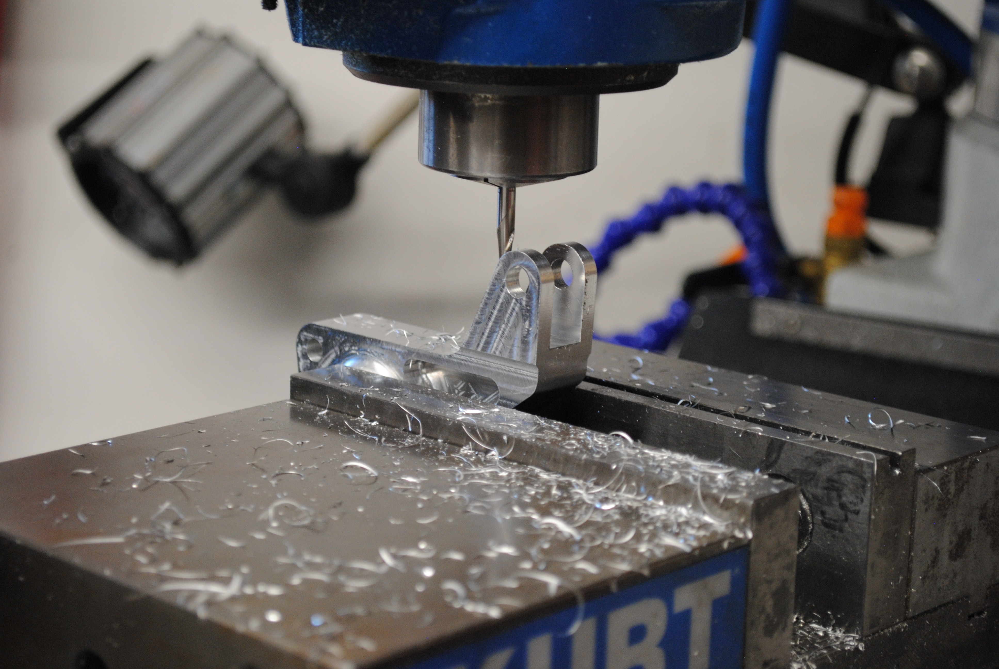

Our vehicle dynamics team manufactures components in-house. The suspension package involves our springs, dampers, anti-roll bars, push & pull rods, control arms, and tires. The suspension team is involved with all things tuning: dampers, toe, camber, tire temperatures. Using this data and knowledge of vehicle dynamics, we make adjustments to the car depending on the type of driving we are doing.


Aaron is a senior mechanical engineering major with a math minor. He joined the team in Fall 2021, served as brakes & controls lead for two years and served as the teams president in 2023/24. During this time Aaron began learning the art of vehicle dynamics. Aaron's design goals for this season include a rear structure update, anti-roll bar redesign, and ensuring the car's quality and dependability.